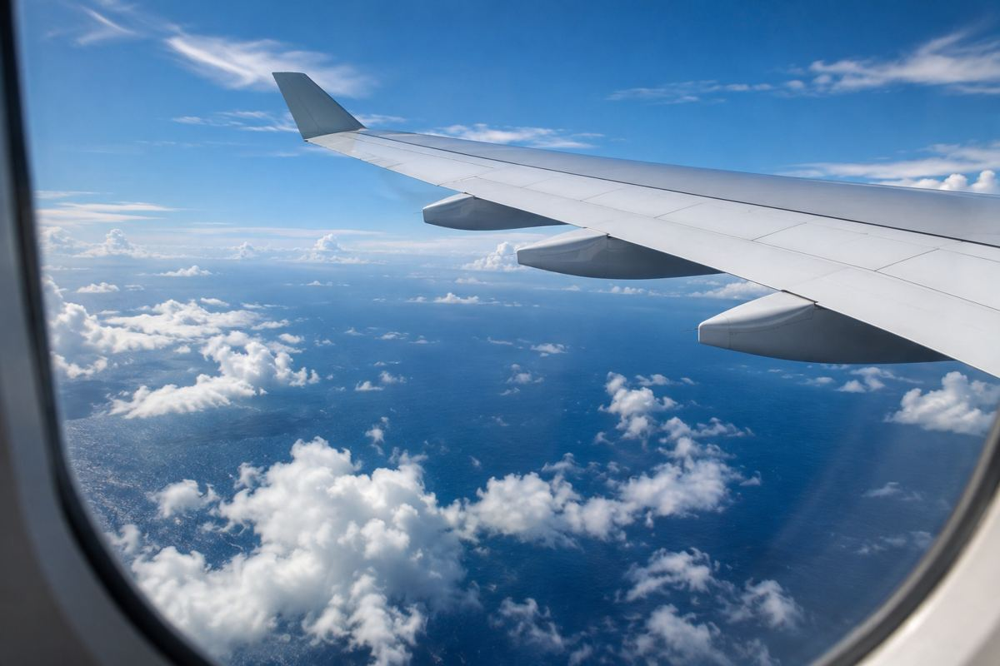

시간표 해설 / EXPLAINED
ANA 나리타–호놀룰루 NH182, 11월 6~20일 매일 운항 시간표
8월 20일 갱신 시간표의 이번 주 적용 내용을 확인했다. NH182의 기간별 편수와 노선 전체의 편수는 구분해야 한다.

ANA의 공개 겨울 시간표에 따르면 나리타발 호놀룰루행 NH182는 11월 6일부터 20일까지 매일 운항하는 일정이다. 직전인 10월 25일~11월 5일에는 화·금·일요일 주 3회로 표시돼 있다. 이번 주 바뀐 것은 이 편명의 운항 패턴이다. 원문은 8월 20일 갱신된 자료로, 11월에 새로 발표한 증편 소식으로 바꿔 쓰면 안 된다. 본지는 11월 8일 현재 적용되는 구간을 다시 확인했다.
편명 하나와 노선 전체는 다르다
ANA는 일본의 항공사로 도쿄와 하와이 사이에 여러 편명을 운항한다. 같은 표에는 NH184 나리타발과 NH186 하네다발이 매일 운항하는 일정으로 나온다. 따라서 NH182가 주 3회에서 매일로 바뀐다는 말은 나리타–호놀룰루 전체가 처음 매일 운항하게 됐다는 뜻이 아니다. 노선을 비교할 때에는 출발 공항과 편명을 먼저 나눠야 한다. 도쿄라는 도시 이름만 같다고 나리타와 하네다에서의 출발을 같은 공항으로 생각하면 이동 계획이 틀어질 수 있다.
이 매일 운항 구간은 11월 20일까지다. 11월 21일~12월 16일에는 NH182를 다시 화·금·일요일로 표시하고, 12월 17일부터는 다음 매일 운항 구간이 이어진다. 시즌 내내 한 가지 횟수가 고정돼 있지 않다는 얘기다. 특히 출발은 매일 운항 구간에 맞지만 귀국은 다른 기간에 속할 수 있다. 왕복을 같은 달의 하나의 빈도로 묶기보다 각각의 날짜와 귀국편 NH181의 조건을 조회해야 한다. 운항 예정표와 실제 잔여 좌석도 같은 정보는 아니다.
태평양을 건너는 날짜 읽기
일본과 하와이 여행은 날짜 변경선을 지나므로 시각뿐 아니라 달력의 날짜를 확인하는 것이 중요하다. 단순히 몇 시 출발·몇 시 도착만 보고 숙박 시작일을 정하면 날짜를 어긋나게 잡을 수 있다. 실제 예약 확인서의 현지 도착일을 기준으로 호텔과 렌터카를 맞춰야 한다. 이 기사에서는 표에 없는 개별 출도착 시각이나 비행시간을 만들어 넣지 않았다. 한국에서 일본 국내 공항을 경유한다면 첫 구간과 국제선 사이의 공항 이동 여부도 별도로 확인해야 한다.
ANA는 FLYING HONU 안내 페이지에서도 기간별 운항을 설명한다. 그러나 기종과 운항 횟수가 안내돼 있다는 사실만으로 특정 좌석·서비스를 무조건 보장한다고 볼 수 없다. 일정이 바뀌거나 기재가 교체될 수 있으므로 구매 단계에서 실제 판매편의 기종과 좌석도를 확인하는 과정이 남는다. 이미 여행 날짜가 정해졌다면 추가된 날짜에 이용 가능한 운임이 있는지 보는 것이 중요하다. 편수가 늘어난다고 모든 날의 가격이 내려간다는 관계는 이 자료에서 확인되지 않는다.
이번 시간표는 주 단위의 여행 선택이 시즌 중에도 바뀐다는 사례다. 11월 6일의 적용 시작과 11월 20일의 종료를 함께 적어야 변화의 범위가 보인다. 이는 공개된 표를 독자의 일정에 맞춰 해석한 것이며 개별 비행의 실제 출발을 모두 추적한 보도는 아니다. 항공권을 아직 고르지 않은 사람은 편명별 판매 날짜를 비교할 수 있고, 이미 예약한 사람은 자신의 여정이 달라졌는지 항공사의 예약 정보를 확인하면 된다. 과거 발표를 현재 적용 내용으로 읽되 새 발표라고 포장하지 않는 것이 이 소식의 기준이다.